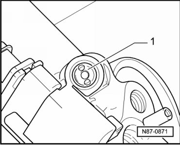
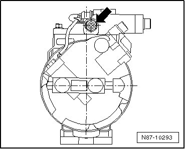

Compressor HVAC: Testing and Inspection
Pressure Relieve Valve on A/C Compressor, Checking
CAUTION!
There is a danger of ice-up.
Pressure relief valve will drain refrigerant with engine running and high pressure in refrigerant circuit.
Turn engine off.
• Function: Protects refrigerant circuit against excessive pressures
• The pressure relief valve has operated when refrigerant oil is found in the close vicinity.
Check pressure relief valve - 1 - on vehicles with A/C compressors by Denso and 6-/10 cylinder engine.

Check pressure relief valve - arrow - on vehicles with A/C compressor by Denso.
